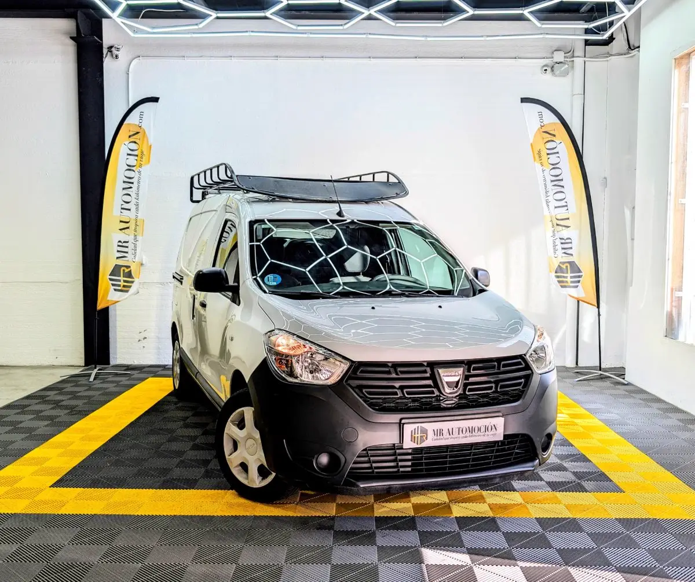

1 / 24--**DESCUENTO ACTIVO EN FURGONETAS, -1000€ DEL PRECIO DE SALIDA(11.900€). **-- Rentabilidad, capacidad y acceso sin restricciones. Te presentamos esta Dacia Dokker Express 1.6 SCe GLP , matriculada en abril de 2021 . Una furgoneta que combina la fiabilidad mecánica con la eficiencia de la Etiqueta ECO .
Bajo el capó monta el robusto motor 1.6 de 110 CV (80 kW) , capaz de funcionar con Gasolina y GLP, lo que reduce drásticamente tus costes operativos. Con 121.629 km , esta unidad destaca por su sorprendente capacidad de trabajo: ofrece una carga útil real de 675 kg , ideal para profesionales que necesitan transportar peso sin recurrir a furgones grandes.
Además, cuenta con barras de techo homologadas en ficha técnica y la ITV en vigor hasta 2027. Hemos verificado la documentación para garantizarte las prestaciones de esta herramienta de trabajo: Capacidad de Carga y Dimensiones Carga Útil: 675 kg (MMA 1.965 kg - Tara 1.290 kg). Barras de Techo Homologadas: Altura total 1.846 mm.
Lista para cargar escaleras o tubos. Zona de Carga: Furgón cerrado (sin cristales en zona de carga) para máxima seguridad de la mercancía. Puerta lateral deslizante y puertas traseras asimétricas 180º. Mecánica y Eficiencia Motor: 1.6 SCe (1.598 cc) de 110 CV (80 kW). Bi-Fuel (GLP + Gasolina): Doble depósito para una autonomía extendida.
Modo ECO: Optimización de consumo. Transmisión manual de 5 velocidades. Equipamiento Essential Conectividad: Bluetooth para manos libres y entrada USB. Aire Acondicionado Elevalunas eléctricos. Cierre centralizado con mando. Ordenador de a bordo. Seguridad ABS y ESP (Control de estabilidad).
Neumáticos 185/65 R15 en buen estado. Luces diurnas. Airbag de conductor. Tu Compra Segura con MR Automoción En MR Automoción la transparencia es nuestra base. Esta unidad te ofrece: ✅ Etiqueta ECO : Acceso libre a Zonas de Bajas Emisiones (ZBE) y ahorro en parquímetros. ✅ Documentación al Día : ITV vigente hasta abril de 2027 . ✅ Garantía Completa de 1 Año : Tu herramienta de trabajo, asegurada. ✅ Kilometraje Certificado : 121.629 km verificados. ✅ Mantenimiento al Día : Revisada por nuestro equipo para trabajar desde el primer día.
¿Por Qué Esta Dokker es Líder en Rentabilidad? Carga como una Grande: Pocas furgonetas de este tamaño ofrecen 675 kg de carga útil real. Coste por Km Mínimo: El GLP es mucho más económico que el diésel. Sin Sorpresas: ITV pasada hasta 2027 y matrícula de 2021 (LNS), lista para transferir y rodar.
Versatilidad: La baca homologada te da ese extra de espacio que siempre falta.
| Marca | Dacia |
|---|---|
| Modelo | DACIA Dokker Express 1.6 SCe GLP Essential |
| Año | Abr 2021 |
| Kilómetros | 121.630 km |
| Combustible | glp |
| Cambio | Manual |
| Potencia | 110 CV |
| Garantía | 1 Año |
| IVA | NO DEDUCIBLE |
Quizá también te encaje